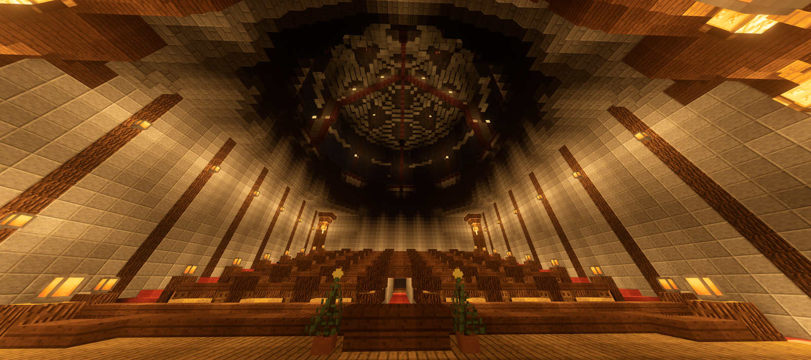
Tips
- ・JVM最適化による軽量化
- ・お金の集め方
- ・取引禁止アイテム
- ・百貨店への出品・Vending Blockの使い方
- ・Townyの使い方・土地の入手方法
- ・投票
- ・スキルツリーシステム
- ・ウィークリークエスト
- ・ガチャの回し方
- ・インフルエンサー・クリエイターサポート
- ・ディメンション一覧
JVM最適化による軽量化
- 1.FruitLauncherのホームから「設定」を開く。(赤で囲んだマーク)
- 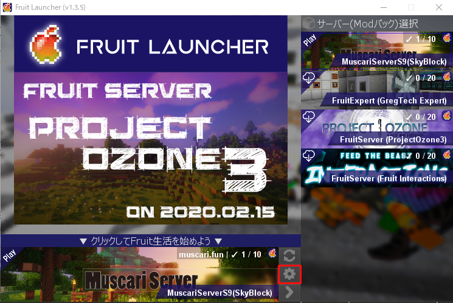
- 2.JVM引数の入力欄(赤で囲んだところ)に以下の引数を入力する。(コピペして使ってね)
- -server -XX:+UseConcMarkSweepGC -XX:+CMSIncrementalMode -XX:SurvivorRatio=4 -XX:TargetSurvivorRatio=80 -XX:NewRatio=3 -Xss64M -XX:ParallelGCThreads=2 -XX:ConcGCThreads=2 -XX:ReservedCodeCacheSize=128M -XX:CompressedClassSpaceSize=128M -XX:MinHeapFreeRatio=20 -XX:MaxHeapFreeRatio=70 -XX:CICompilerCount=4 -XX:InlineSmallCode=8K -XX:MaxInlineSize=128 -XX:MaxTrivialSize=32 -XX:InitialTenuringThreshold=10 -XX:MaxTenuringThreshold=15 -XX:CompileThreshold=500 -XX:CMSInitiatingOccupancyFraction=80 -XX:+UseCMSInitiatingOccupancyOnly -XX:+CMSScavengeBeforeRemark -XX:+ParallelRefProcEnabled -XX:+AggressiveOpts -XX:+OptimizeStringConcat -XX:+UseFastAccessorMethods -XX:+CMSScavengeBeforeRemark -XX:+CMSClassUnloadingEnabled -XX:+DisableExplicitGC -XX:-UseGCOverheadLimit -XX:+UseCompressedOops -XX:+UseCodeCacheFlushing -XX:MaxGCPauseMillis=10 -XX:UseSSE=4 -XX:UseAVX=2 -Duser.language=en -Duser.country=US -Djline.terminal=jline.UnsupportedTerminal
- 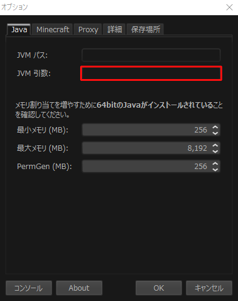
- 3.最大メモリを指定する。
| お使いのPCのRAM | 最大メモリ |
| 8GB | 4096 |
| 16GB | 8192 |
| 17GB以上 | お使いのPCと相談 |
お金の集め方
- 資源ワールドに生成されるMuscarium鉱石を鉱石買取所で買い取って貰うことが主なお金の入手方法です。
- 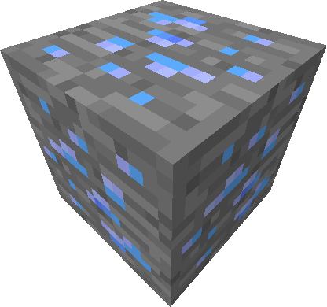
- 画像：Muscarium鉱石
- よりお金を稼ぎたい場合は、百貨店でアイテムを出品してお金を稼ぐことができます。
取引禁止アイテム
以下のアイテムを取引した場合、販売者、購入者共に処罰が行われる場合があります。| アイテム名(en) | アイテム名(jp) | アイテムID | 理由 |
| Orb of Skills | スキルのオーブ | contenttweaker:vote_skill | スキルツリーに影響を与えてしまうため |
| Kamesteel Ingot | かめスチールインゴット | contenttweaker:kamesteel | 生産量抑制アイテムとしての役割が損なわれるため |
| Kamesteel Nugget | かめスチールナゲット | contenttweaker:nugget_kamesteel | 生産量抑制アイテムとしての役割が損なわれるため |
百貨店への出品・Vending Blockの使い方
- 当サーバーの要といえる経済要素、それを支えるのが百貨店です。
- 百貨店ではプレイヤーが商業スペースを購入することで出品できます。
- 販売/買取にはVending Blockを用います。
- Vending Blockのレシピ(石の部分は様々なブロックに置き換えることができます。)
- 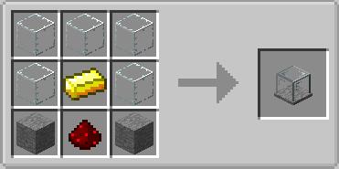
- Vending Blockの使い方(画像の番号と説明の番号は対応しています。)
- 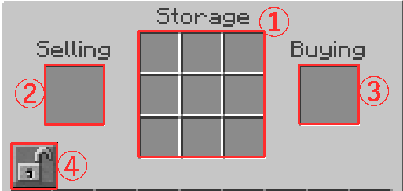
- 自分が設置したVending Blockを右クリックとGUIが開きます。
- 共通：
- ④ショップを閉じる/開く
- 物を売りたい時：
- ①アイテムの在庫と後述する回収用Banknoteを置く
- ②売りたいアイテムを置く(個数は置いた数売ることができる)
- ③販売価格を設定するために後述する設定用Banknoteを置く
- 物を買い取りたい時：
- ①後述する支払用Banknoteを置く
- ②買取価格を設定するために後述する設定用Banknoteを置く
- ③買い取りたいアイテムを置く(個数は置いた数売ることができる)
- 各種Banknoteについて
- 各種Banknoteはコマンドで入手することができます。
| コマンド | 詳細 |
| /enpay <金額> | 設定用Banknoteを入手します。お金に還元することはできません。 |
| /enpay0 | 回収用Banknoteを入手します。お金が入ると3日間の有効期限付きのFilled Banknoteになり、 手に持って右クリックでお金に還元することができます。 |
| /enpaymenu | 支払用Banknoteが入手できるGUIを開きます。購入時に10%の手数料が発生します。 手に持って右クリックでお金に還元することはできますが、手数料は返金されません。 |
- 他プレイヤーのVending Blockはブロック右クリックで購入/売却を行うことができます。
- 価格や物品は画面上部のに表示されます。
- エンチャント等は表示されないので看板などに記入するとプレイヤーが欲しがるかも...?
- Banknoteの仕様
- ・支払用Banknoteの期日は一度でも買取によって引き出されると有効期限が3日に戻ります。
- ・有効期限が過ぎるとただの紙くずになるのでショップはこまめに確認して下さい。
- ・1日に1%の手数料が引かれます。
Townyの使い方・土地の入手方法
使用可能コマンド一覧 ・自分が町長になる場合| コマンド | 詳細 |
|---|---|
| /town new <町の名前> | 新しい町を作成します。費用は1200$です。 |
| /town set board <メッセージ> | 町民がログインした時に表示するメッセージを設定します。"none"に設定すると無効化されます。 |
| /town set mayor <プレイヤー> | 町民に町長の権限を与えます。 |
| /town set homeblock | 町のホームブロックとスポーンを設定します。 |
| /town set homeblock | 町のホームブロックとスポーンを設定します。 |
| /town set spawn | 町のホーム地点を設定します。ホームブロック内で実行する必要があります。 |
| /town set name <名前> | 町の名前を設定します。 |
| /town set tag <タグ> | 町のタグを設定します。タグは4文字以内である必要があります。 |
| /town set taxes <金額> | 町民から毎日徴収する税金を設定します。 |
| /town set plottax <金額> | 町民が所有する区画の数に応じて毎日徴収する税金を設定します。 |
| /town set plotprice <金額> | 区画の価格を設定します。 |
| /town set title <プレイヤー> <プレフィックス> | 町民にプレフィックスを設定します。 |
| /town set surname <プレイヤー> <サフィックス> | 町民にサフィックスを設定します。 |
| コマンド | 詳細 |
|---|---|
| /town set surname <プレイヤー> <サフィックス> | 町民にサフィックスを設定します。 |
投票
- monocraftまたはJapan Minecraft Serversで投票することにより、
１日１回報酬を受け取ることができます。 - Voting Reward(投票報酬)はFTBQuestsの「投票」でアイテムと引き換えることができます。
ウィークリークエスト
- 報酬付きのクエストが毎週追加されます。
- クエストはFTB Questsで確認できます。
- クエストの総達成回数はランキングでロビーに表示されます。
※重要 スキルツリーシステム
- 当サーバーでは取引活性化のため、スキルツリー制度を導入しております。
- スキルツリーはFTBQuestsの「スキルツリー」で設定することができます。
- スキルツリーの開放にはOrb of Skills(スキルのオーブ)というアイテムとプレイ時間が必要です。
- Orb of Skillsの必要個数や必要プレイ時間などは下の画像を参照してください。
- Orb of Skillsは投票で貰えるVoting Reward(投票報酬)をFTBQuestsの「投票」で引き換えることができます。

- ※注意事項
- ・取得できるスキルはTierにつき1個(合計3個)です。
- ・取得できなかったスキルは二度と取得できません。
インフルエンサー・クリエイターサポート
- 当サーバーはTwitterや動画投稿サイトを活用した広報活動をして頂けるプレイヤーを支援します。
- MuscariServer公式Twitterのプレゼント企画ツイートをフォロー&RTで抽選でプレゼントが貰えます。
- 受け取り方法
- 1.ゲーム内で/twitter set <@から始まるユーザー名> 例：/twitter set @taisa_ism と入力する。
- 2.Discordで抽選結果が発表されたらFTBQuestsの「受信箱」にプレゼントが届いているので受け取る。
- ・Youtube/ニコニコ動画
- Discordの動画チャンネルにMuscariServer関連の動画を貼るとガチャを回せるコイン10枚が貰えます。
- 条件
- ・タイトルに「MuscariServer」が入っていること。
- ・生放送アーカイブでないこと。
- ・無編集垂れ流し動画でないこと。
ディメンション一覧

- ・メインロビー
- サーバーに参加して一番初めに立ち入る場所。
- 様々な世界とのゲートを繋いでいます。
- 施設
- ・オークション会場 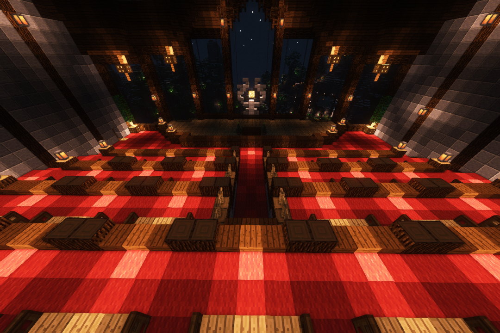
- ・広場 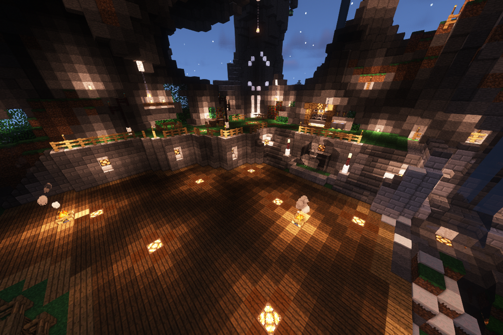
- ・ポータルスペース 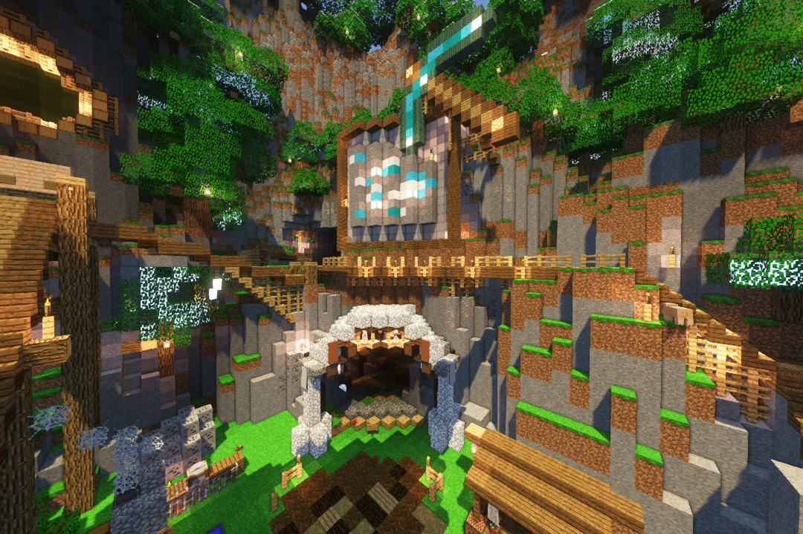
- ・ネザーゲート 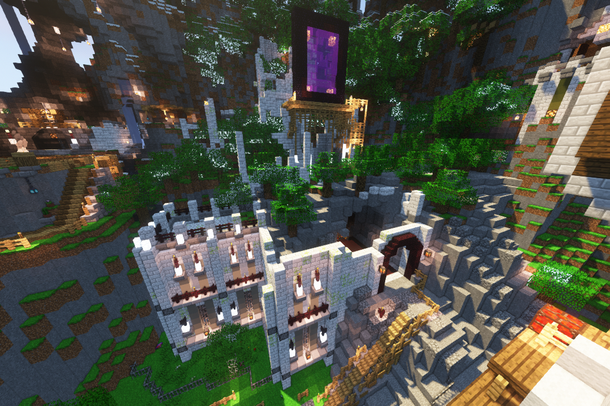
- ・黄昏の森ゲート 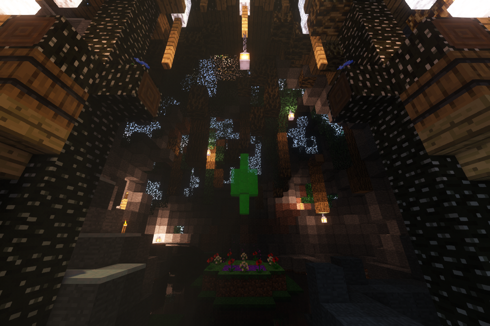
- ・アスレチック 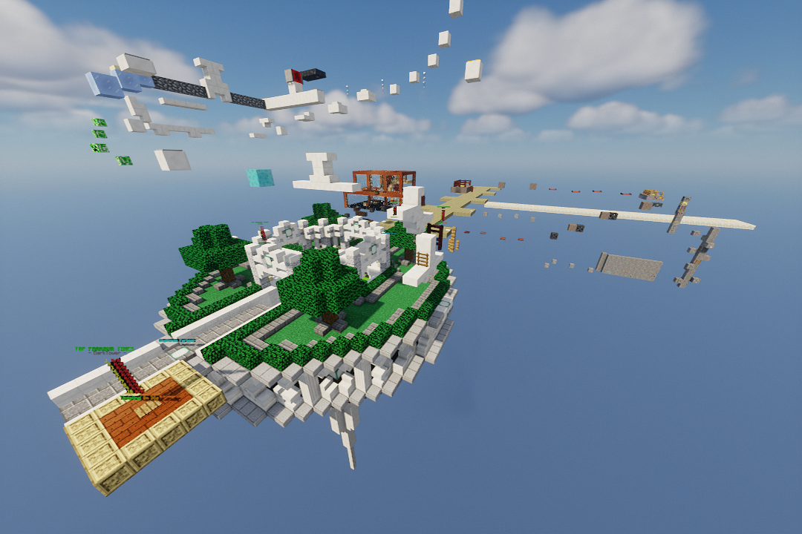
- アスレチック専用ワールドです。
- 初回クリアで賞金が貰えます
- 各アスレチックにランキングが表示されていて、鯖民とタイムを競うことができます。
- ・カジノ 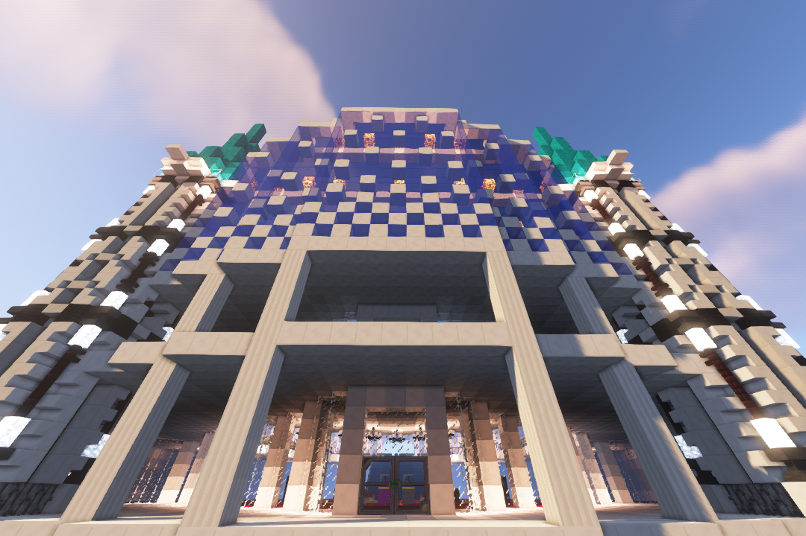
- カジノのゲームができるワールドです。
- お金をを賭けることができます。
- 施設
- ・スロットマシン
- ・ブラックジャック
- ・ルーレット(追加予定)
- ・ネザー 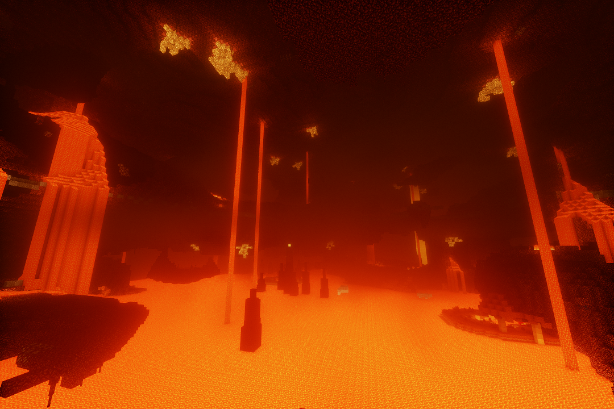
- ※リセットが定期的に行われます。拠点作成は非推奨です。次回リセット：未定
- HeatandClimateの気候システムにより一部地域でダメージを受けるので注意してください。
- ・エンド 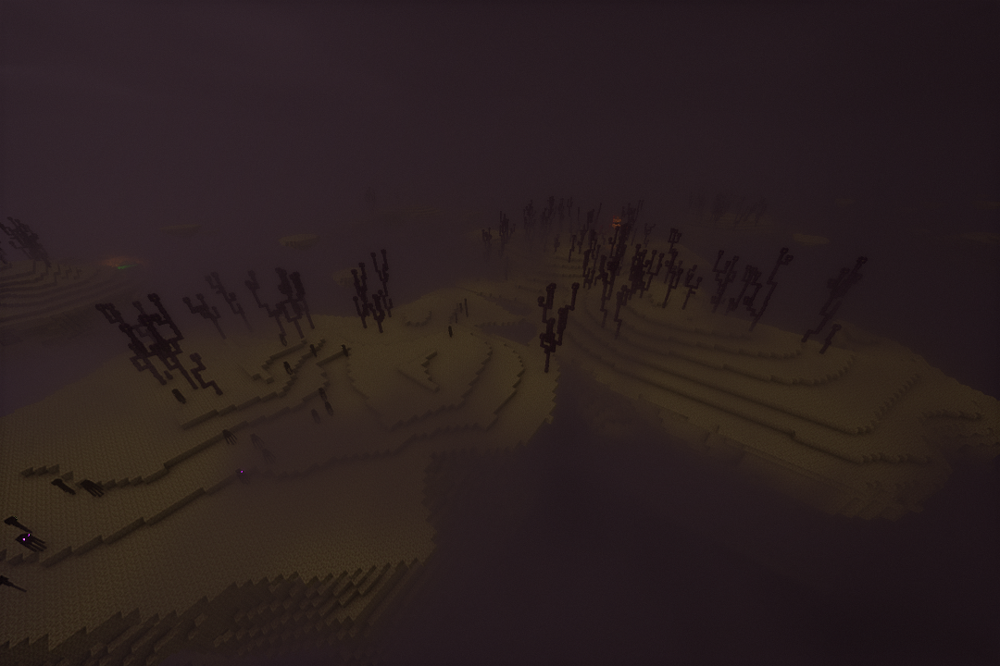
- ※リセットが定期的に行われます。拠点作成は非推奨です。次回リセット：未定
- HeatandClimateの気候システムにより全域でダメージを受けるので注意してください。
- ・黄昏の森
- ※リセットが定期的に行われます。拠点作成は非推奨です。次回リセット：未定
- 日の出が訪れないモンスターの魔窟と化した不思議なディメンション。
- モンスター達は建物を築いてプレイヤーの挑戦を待っている...
- ・Erebus
- ※リセットが定期的に行われます。拠点作成は非推奨です。次回リセット：未定
- 人のいない自然にあふれた大洞窟に虫が暮らしている世界。
- ヤツらは人の匂いを嗅ぎつけて襲ってくる。
- ・？？？ 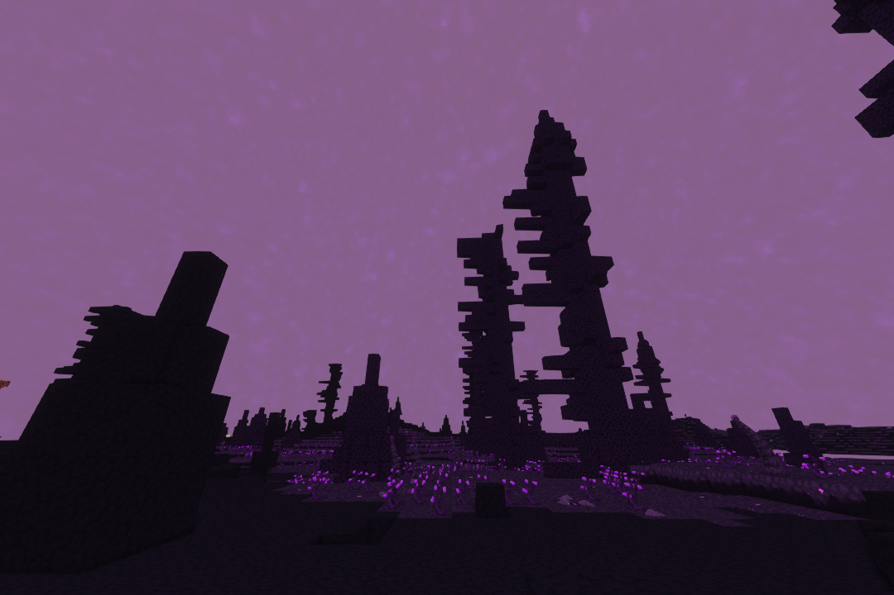
- ※リセットが定期的に行われます。拠点作成は非推奨です。次回リセット：未定
- 縺昴ｉ繧偵∩縺ゅ￡繧九→
- 縺ｪ縺ｫ繧ゅ↑縺
- 縺ｪ縺ｫ繧ゅ↑縺?↑縺ｫ繧ゅ↑縺?↑縺ｫ繧ゅ↑縺?↑縺ｫ繧ゅ↑縺?↑縺ｫ繧ゅ↑縺?↑縺ｫ繧ゅ↑縺?↑縺ｫ繧ゅ↑縺
- 縺励ｍ縺ｫ縺?縺代?縺｡縺九▼縺上↑
- ・建築
- 景観重視のワールド。
- ※景観を損なう施設や機械等を大量に置いた場合、運営により注意または撤去される場合があります。
- ・攻略
- 攻略重視のワールド。
- 建築に自信がない人やmodでたくさん遊びたい人向け。
- ・資源 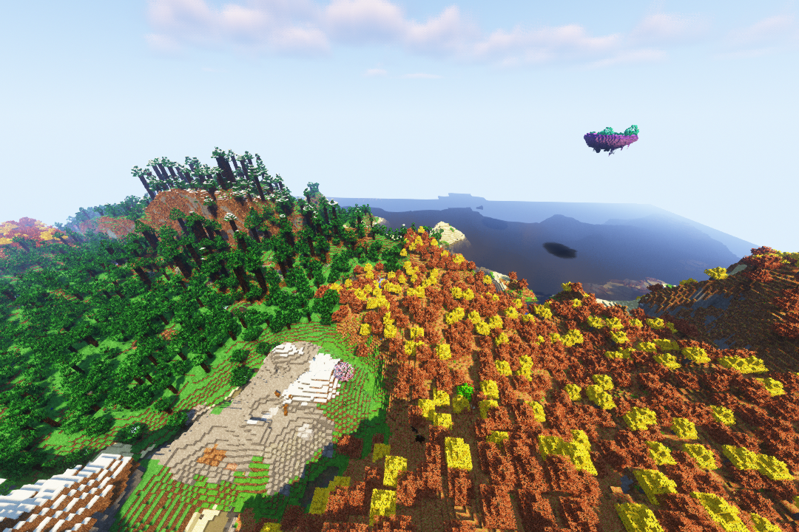
- ※リセットが定期的に行われます。拠点作成は非推奨です。次回リセット：未定
- オーバーワールドの資源を集めることができます。


© 2020 Muscari Server All Rights Reserved.